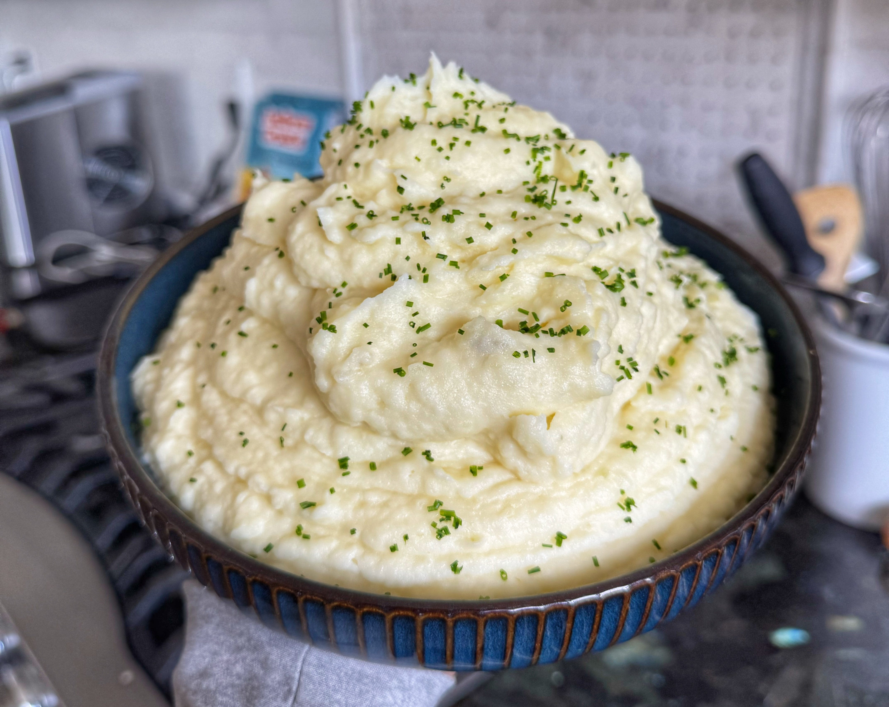

Fluffy and Creamy Mashed Potatoes
Fluffy-and-Creamy-Mashed-Potatoes • Serves ~6 • Side

These mashed potatoes are built on starch management: russets for their breakdown, thorough rinsing to remove excess starch, and hot cream and butter mixed in while everything is still warm so the texture stays fluffy, not gluey.
Ingredients
- 3 lb russet potatoes
- 4 oz unsalted butter
- 1¼ cups heavy cream
- 2 tbsp + 2 tsp kosher salt
- 1 tbsp fresh chives, chopped (for garnish)
Method
1. Prep and rinse
- Peel the potatoes and dice into 1-inch pieces.
- Place in a bowl of water and rinse to remove surface starch.
2. Cook the potatoes
- Put the potatoes and fresh water into a pot.
- Bring to a simmer and cook for about 30 minutes, or until fork-tender.
3. Warm the cream and butter
- While the potatoes cook, bring the cream and butter to a simmer in a small pot.
- Turn off the heat once the butter is melted and keep warm.
4. Drain and rinse again
- Strain the cooked potatoes.
- Rinse briefly with warm water to wash away additional starch.
5. Mash and mix
- Return the potatoes to a bowl (or mixer with a whisk attachment).
- Add the hot cream and butter mixture.
- Season with the salt.
- Whip or mash until smooth and creamy, keeping everything warm as you mix.
6. Finish
- Taste and adjust seasoning as needed.
- Top with fresh chives just before serving.
Flavor Variations
- Roasted Garlic: Add 10–15 crushed roasted garlic cloves.
- Lemon Basil: Add 1 tbsp chopped fresh basil, 1 lemon juiced and zested.
- Mushroom Brie: Add ½ cup chopped cooked mushrooms and ½ cup chopped brie.
- Pesto: Add 4 tbsp pesto.
- Crunchy Potato: Stir in 2 handfuls of crushed potato chips.
- Autumn Herb: Add chopped sage, rosemary, thyme, oregano, and chives.
- Mustard Potato: Add a few tbsp of your favorite mustard.
- Pizza Potato: Add chopped pepperoni and mozzarella.
Key idea: Get rid of excess starch, keep everything hot when you add cream and butter, and you'll get fluffy potatoes instead of paste.